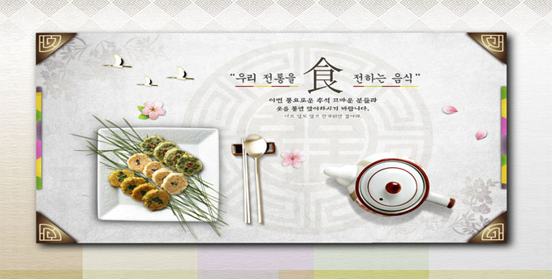
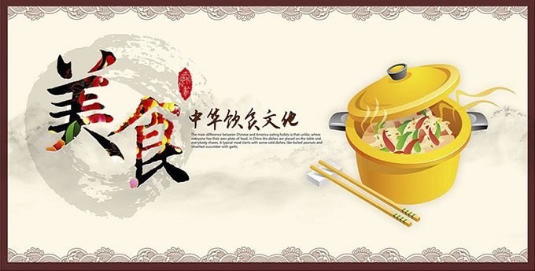
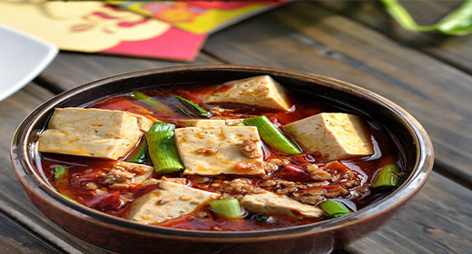

首页
营养专栏
健康专栏
论坛交流
热门话题
我的账户
健康专栏:
坏掉的水果还能不能吃
无论吃素还是吃荤 均衡膳食才是关键
奇异果可防失眠可减肥并能预防心脏病
感冒类型有区别 姜汤不能随便喝


饮食常识
人到底能饿多久 不喝水最多能坚持72小时
无论吃素还是吃荤 均衡膳食才是关键
这十种食物的营养其实没那么丰富
关于西红柿的七个小知识 你可能不知道哦
饮食健康
揭秘16种伪健康食物的真面目
剩菜剩饭的危害 如何避免剩菜剩饭
深夜进食哪些食物不能吃及注意事项
生活饮食妙招轻松解决女人小毛病

<
>
烹饪技巧
100个做饭炒菜小技巧 菜太苦滴入白醋
把肉变嫩的七个秘诀:淀粉法 食油法
教你怎么样快速切细丝土豆丝
快速解冻肉的方法 保存肉及烹饪技巧
生活保健
感冒类型有区别 姜汤不能随便喝
高个子易患癌矮个子易患心脏病
发烧到多少度才应该吃退烧药
预防癌症的七个健康生活习惯
养生常识
如何正确科学选择女性保健品
爱做饭对大脑有良性的刺激
缓解疲劳增强记忆预防脱发
春季出游七个须知 注意场所选择